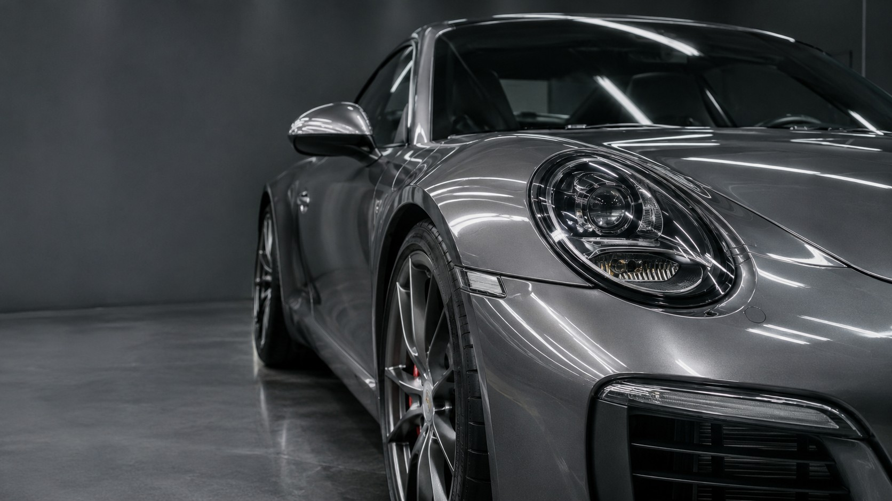

01 Работы / демонстрационный проект
FORMA
01 Задача
Показать, за что платит водитель.
По фотографии автомобиля трудно понять, нужна ли полировка. Мы построили демонстрационный сайт вокруг двух решений: сначала посетитель изучает поверхность при боковом свете, затем собирает программу ухода и видит стоимость каждой услуги.

Свет проявляет дефект.
Посетитель сам передвигает источник света. При одинаковом освещении легче заметить, как меняется отражение на полированной стороне. Прямо отсюда полировку можно добавить в расчёт.
Провести светом по лаку
Цена складывается на глазах.
Класс машины и состав программы определяют сумму. Каждая выбранная услуга появляется в сводке отдельной строкой. Результат переносится в демо-запись, которую можно проверить без отправки данных.
Изменить расчёт полировки